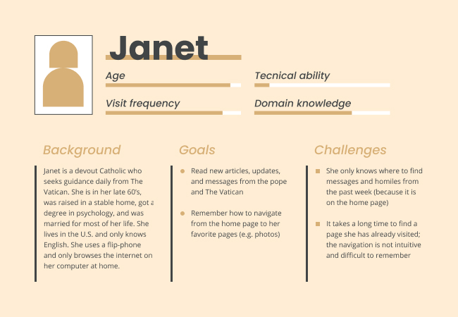
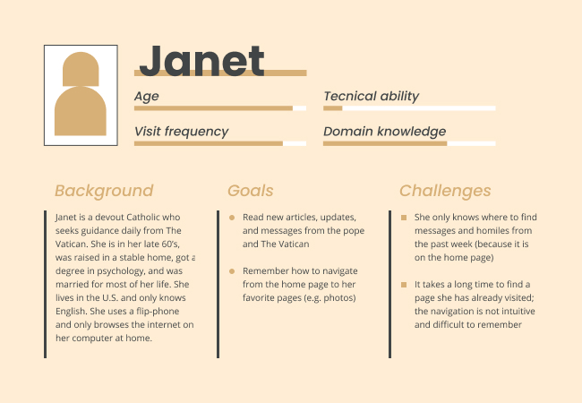

Web Design
This class focused on the design aspects of UX rather than the technology. The class encouraged the process of sketching, wireframing, and then building a functional website. All projects were completed during the spring 2021 semester.
Product Page view
This was probably my favorite project. Our task was to create a product launch page, but I requested to make a "product" page for bagels instead of a real product. Choosing tasty images and adding silly text made this project tons of fun!
Virtual Card view
This project was designed to learn/practice HTML and CSS. Everything was coded by hand, so we didn't spend time polishing it (making it responsive, adding transitions, etc.) because the class is geared toward design students.
Initial Sketches

Wireframe and Final Website
Website Redesign
The first task of this project was to find a website to redesign. I chose the website of the Vatican for two reasons: 1) I currently attend an Anglican church and have an interest in the relationship between traditional Christianity and technology, and 2) the website is severely outdated and in need of renovation. My design process focused on the potential users of the site and how to help them accomplish their goals.
User Personas
 

User Flow

Site Map

Style Tile

Wireframes


Final Mockups